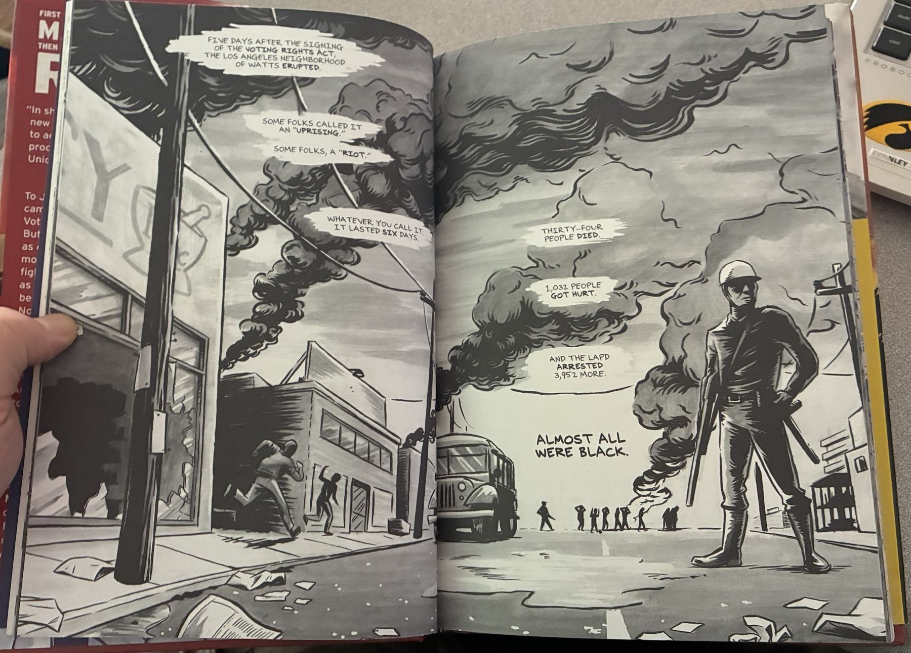

Read like a sociologist. For each part: read the page on the left → get the check right → then a word check or 1–2 sentences. Done = 5 green parts, then turn in at the bottom.
Content note: These pages are from Run: Book One, John Lewis's true story. Page 1 shows a city on fire and a soldier with a rifle, and says 34 people died. Page 5 shows Ku Klux Klan members. Page 2 uses "Negro," a word for Black Americans that was common in 1965.
Word help (tap to open)
- Stratification = society ranked in layers, with some groups getting more money, power, and respect
- Conflict theory = society is a fight between groups over power; inequality causes conflict
- Social movement = many people working together over time to change society
- Policy response = the government acts with a law, ruling, or rule
- Community response = people act on their own, with no new law
- Systemic = built into the whole system, not just one person
- Backlash = a push back against change
- Ghetto = a poor neighborhood kept separate by race
- Nonviolence = protesting without fighting back, even when attacked
- SNCC = Student Nonviolent Coordinating Committee (say "snick")
- Voting Rights Act = 1965 law that banned unfair voting tests

Click the page to make it bigger.
Turn in your work
Your work saves on this device, so you can come back later. Your teacher sees it after you turn it in.
Pages from Run: Book One (2021) by John Lewis and Andrew Aydin, art by L. Fury with Nate Powell, Abrams ComicArts. Photographed from your teacher's copy for classroom study. Reader page 1 is a two-page spread.